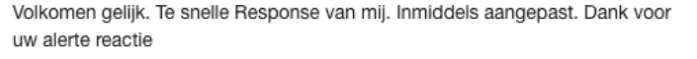

Bewijsstuk · Tweet
Minister Bijleveld aan Giltay op Twitter, 25 oktober 2018
De passage
“Volkomen gelijk. Te snelle Response van mij. Inmiddels aangepast. Dank voor uw alerte reactie” Het antwoord van de minister, het tweede bericht in de reeks. ‘Response’ draagt in het origineel een hoofdletter omdat Giltay dat woord zojuist had gecorrigeerd: de Benelux-samenwerking heet Quick Reaction Alert, niet ‘Quick Response Alert’. Het antwoord eindigt zonder punt.

Waarom dit document telt
In 2016 liet Overduyn in haar memorie van antwoord onweersproken dat Giltay haar ontslagaantijging met bewijs had weerlegd, en in 2017 beantwoordde het Ministerie van Defensie Giltays verzoek om intrekking van de gekverklaring met de mededeling dat zijn zaak als afgedaan werd beschouwd. Een jaar later schreef minister van Defensie Ank Bijleveld hem zelf in een tweet dat hij volkomen gelijk had over de naam van een Benelux-samenwerking, en dankte zij hem voor zijn alertheid. In dezelfde reeks vroeg Giltay haar het MID-verslag van 12 februari 1999, waarin stond dat hij ‘volledig gestoord’ was, recht te zetten en hem ook daarin gelijk te geven. Het verslag uit 1999 werd niet aangepast.
Herkomst
- Document
- Schermafbeelding van een openbare reeks op Twitter
- Van
- Ank Bijleveld, minister van Defensie (@MinBijleveld)
- Aan
- Edwin Giltay (@edwingiltay)
- Datum
- 25 oktober 2018
- Onderwerp
- De naam van de Benelux-samenwerking: niet ‘Quick Response Alert’ maar Quick Reaction Alert
- Reeks
- Drie berichten: Giltays correctie, het antwoord van de minister, en Giltays verzoek om ook het MID-verslag uit 1999 recht te zetten
- Bijgevoegde afbeelding
- MID-verslag van 12 februari 1999, nr. Det/51/99, onderwerp ‘Intern onderzoek GILTAY’, getoond in Giltays slotbericht
- Taal
- Nederlands
- Berust bij
- Archief van de auteur
- Zie ook
- Intern onderzoek voor de chef-staf MID, 12 februari 1999Memorie van antwoord van Overduyn aan het Gerechtshof Den Haag, 2 februari 2016Ministerie van Defensie aan Giltay, 6 juni 2017
Aangehaald in:
- het essay ‘Het verbod viel, het boek bleef overeind’ in het hoofdstuk (10) ‘Barsten in de muur’
- de stemmensectie.
Document: https://
Laatst gewijzigd 13 september 2026, geraadpleegd 3 oktober 2026.

Deze pagina is een bewijsstuk bij het boek De doofpotgeneraal van Edwin Giltay en de bijbehorende website.